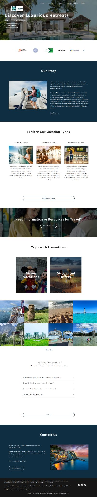

The challenge

← Back to Work
Travel
ZenTravels
Travel websites are naturally good at inspiration. The harder part is helping someone turn that inspiration into an actual next step.
Platform usedWix
Project typeTravel
The story
What the project was really solving.
ZenTravels needed both sides of the journey: the emotional pull of travel and a practical route into planning. I organized the experience around travel intent, kept useful resources tied to the trip itself and made the next planning action obvious enough that visitors did not lose momentum after browsing.
What I changed
- Organize content around travel intent.
- Tie resources back to the trip instead of scattering them.
- Keep the next planning step visible.
- Use imagery to inspire without letting it replace useful information.
Where it ended